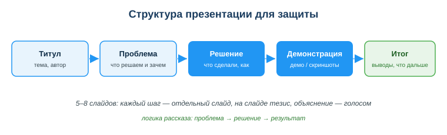
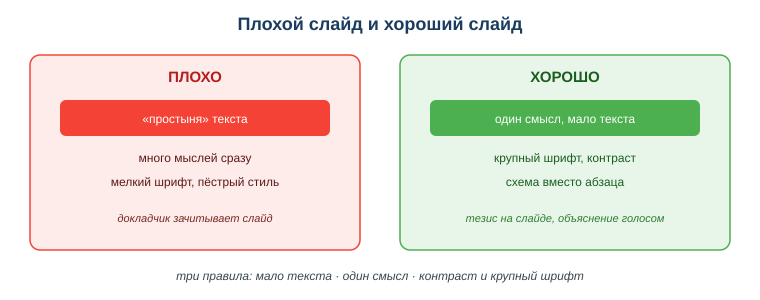

Создавать презентации для защиты проектов
Практическая ситуация
Ты сделал отличный проект — он работает, код чистый, фишки продуманы. Наступает защита. Пять минут перед комиссией, и ты не успеваешь объяснить, что продукт делает и зачем. Слайды забиты текстом, ты читаешь их с экрана, комиссия теряет нить. Оценка выходит ниже, чем работа заслуживает.
Презентация — это не «слайды ради слайдов», а инструмент, который помогает донести идею за короткое время. Разработчику она нужна постоянно: защита проекта, демо для заказчика, доклад в команде. Этот урок — как собрать презентацию, которая работает на тебя.

Что ты научишься делать
- строить презентацию по логике «проблема → решение → результат»;
- оформлять слайды так, чтобы их читали, а не разглядывали;
- готовить устную защиту, а не зачитывать слайды;
- показывать, что продукт работает, через демо или скриншоты.
Почему это важно
Хороший продукт без понятной защиты проигрывает слабому продукту с уверенной защитой. Комиссия и заказчик видят не твой код, а то, как ты о нём рассказываешь. Умение коротко и ясно показать результат экономит время и поднимает оценку.
Связь с профессией: разработчик защищает свои решения постоянно — на ревью, на демо спринта, перед заказчиком. Тот, кто умеет за несколько слайдов объяснить «какую проблему решили и как», ценится в команде выше, чем тот, кто пишет код «в стол».
Учимся читать схему
Посмотри на схему структуры презентации выше. Ответь на вопросы:
- в каком порядке идут слайды от титула к итогу?
- какие два блока выделены как ключевые (акцентные) и почему именно они?
- почему «демонстрацию» ставят отдельным шагом, а не прячут внутри «решения»?
Главное понятие
Презентация защиты — короткий набор слайдов (5–8), который по логике «проблема → решение → результат» помогает докладчику донести суть проекта; слайд несёт тезис, а объяснение даёт устная речь.
Проще: слайд — это опора, а не сценарий. Слайд поддерживает речь, а не заменяет её. Правило: на слайде — тезис, в речи — объяснение.
Структура защиты проекта
Защиту удобно строить по фиксированной схеме слайдов. Каждый слайд — отдельный шаг рассказа:
| Слайд | Что показать |
|---|
| Титул | название, автор, тема |
| Проблема | какую задачу решаем и зачем |
| Решение | что сделали, как работает (схема) |
| Технологии | что использовали |
| Демонстрация | что получилось, демо/скриншоты |
| Итог | выводы, что дальше |
Для учебной защиты достаточно 5–8 слайдов. Больше — внимание комиссии рассеивается, меньше — не успеваешь раскрыть проект.
Правила оформления слайда
- Мало текста. Один слайд — одна мысль, не больше 5–6 строк. Тезис, а не абзац.
- Один смысл. Слайд раскрывает одну идею; не смешивай проблему, решение и итог на одном экране.
- Контраст и крупный шрифт. Заголовок ~32, текст ~24, тёмное на светлом — читаемо из зала.
- Меньше текста, больше схем. Диаграмма понятнее абзаца; для «было/стало» бери таблицу или диаграмму.
- Единый стиль. Один шрифт, 2–3 цвета, согласованное выравнивание.

Совет. Перед защитой посмотри на каждый слайд издалека (или уменьши масштаб до 50%): если текст не читается или мыслей больше одной — слайд надо упростить.
Мини-кейс
Студент вынес на слайд весь код функции мелким шрифтом и зачитал его вслух. Зал ничего не понял: текст слишком мелкий, мыслей слишком много. Следующий шаг — вместо кода поставить схему «что на входе → что делает → что на выходе», а сам код показать живьём в демо. Слайд стал читаемым, а объяснение ушло в речь.
Разбор типичной ошибки
Ошибка. Вынести «простыню» текста на слайд и читать его вслух с экрана.
Почему это ошибка. Аудитория либо читает, либо слушает — не одновременно. Пока комиссия разбирает мелкий текст, твою речь она не воспринимает, и наоборот.
Как правильно. На слайде — короткий тезис и схема, а живое объяснение давать голосом. И обязательно показать демонстрацию: про код можно рассказать что угодно, комиссия хочет увидеть, что продукт работает.
Практика
Ответь письменно:
- Распиши структуру защиты своего проекта по слайдам (титул → проблема → решение → демонстрация → итог), по одной строке-тезису на каждый слайд.
- Возьми перегруженный текстом слайд и перепиши его по правилу «один слайд — одна мысль»: оставь тезис, остальное переведи в устное объяснение.
Образец (часть ответа на пункт 1): «Слайд «Проблема»: тезис — Студенты тратят 2 часа на ручной подсчёт; нужна автоматизация. Объяснение голосом — конкретный пример и цифры».
Самопроверка
- Я умею выстроить слайды защиты по логике «проблема → решение → результат».
- Я знаю три правила хорошего слайда: мало текста, один смысл, контраст.
- Я понимаю, почему демонстрацию работы продукта нужно показывать отдельно.
Подумай
- На каком из твоих проектов защита получилась слабее самой работы? Что в слайдах можно было сделать иначе?
- Где ещё в работе разработчика пригодится умение коротко показать результат (демо спринта, ревью, разговор с заказчиком)?
Итог
Что теперь делать:
- строй презентацию по схеме: проблема → решение → результат;
- на слайде — тезисы и схемы, объяснение — голосом;
- держи 5–8 слайдов, крупный шрифт, единый стиль;
- обязательно покажи, что продукт работает (демо или скриншоты).
Полезные ссылки
Источник: ГОСО ТиПО (рамка результатов обучения); официальная справка Microsoft PowerPoint, Google Презентации и Canva.
Разработал: преподаватель ИКТ, магистр управления и информационной безопасности Калиаскаров Д.А.
Материал разработан рабочей группой ТОО «Колледж Хекслет Казахстан» и одобрен к использованию в обучении решением Педагогического совета.